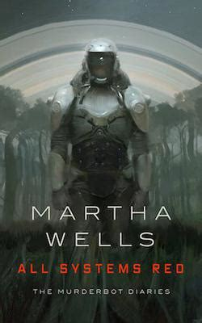
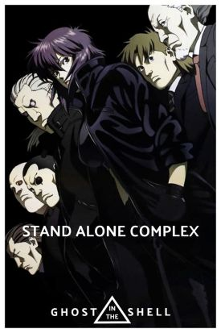
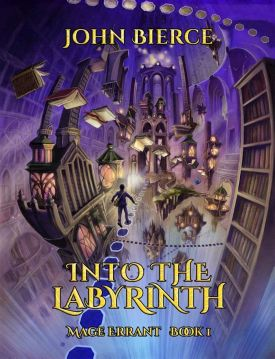

This webpage is created to explore various Science Fiction and Fantasy works that I have personally enjoyed or found to be memorable enough to be worth mentioning here. The range of format types for the media presented will include:
Books Movies TV Shows Video Games Audiobooks
and any other format relevant to mention. Included in this homepage are the three top ranked content I currently find most interesting.
Top 3 Sci-Fi/Fantasy Works Review Space
-
Audiobook: "All Systems Red" by Martha Wells
This Sci-Fi novella was released in 2017 and details the diary entries of a cyborg security unit tasked with protecting it's human clients on a dangerous planet. The book is a part of a larger collection aptly named 'The Murderbot Diaries' and centers around the titular cyborg gaining it's own independence and discovering what purpose in existence it would prefer to pursue. Through meeting new humans, and eventually having to save many of them, it develops into a remarkable entity and explores the aspects of being human that it was never allowed to consider before. This book particularly struck me because the titular character explores the human experience through the lens of an artificial entity that is equiped with human-tissue components along with it's cybernetic machinery. This book is also likely to resonate with individuals who are neurodivergent, such as Autistic or ADHD diagnosed individuals. I enjoyed the subversion of the trope where a human learns how to adjust to new robotic components for their bodies by presenting the human tissue as the 'foreign element' in the normal robotic system. I believe this approach helps express the experiences of neurodivergent people very well.
-
TV Series: "Ghost in the Shell: Stand Alone Complex"
This classic series was created after the first 'Ghost in the Shell' movie was released to the public and continues the story of Major Motoko Kusanagi, an almost fully prosthetic cyborg with only her brain remaining human. She works for a fictional organization called Public Security Section 9 in a futuristic Japan. This world explores the concepts of defining the human experience when so much of the human body can be replaced with robotic components. The series also explores an interpretation of how corporate entities gain enough influence to be almost on par with governmental organizations and the struggle of the populace to exist in this semi-distopic setting. The story for this series covers an high-expertise level hacker attempting to uncover corporate secrets and reveal them to the public with Section 9 attempting to uncover the bigger picture hidden underneath the investigation. I classify this as a good series to introduce someone wanting to explore the concept of cyberization and technology becoming a feature of the human body.
-
Audiobook: "Into the Labyrinth" by John Bierce
This audibook is the first in a series called 'Mage Errant' that is based off of the works of John Bierce. This is a Fantasy story that introduces readers/listeners to a world filled with magic, dragons, adventure, and of course, labyrinths. The series offers a unique presentation of how magic could function in a universe when the magic system uses a basis of scientific principles to create a foundation for how the magic operates in the world. The magic doesn't simply change reality based on a spell, it requires the caster, and thereby the reader, to comprehend the scientific principles underlying the universe-when mages cast fire spells, the spell is affected by humidity, heat tolerance, the flamability of an object, and so on to properly work. I was particularly drawn to the series also portraing neurodivergence in an approachable manner without reducing those references to the trope of 'the special disable child'. The series also presents various social, political, and philosophical topics for it's readers to consider through a very approachable perspective. It respects the reader's intelligence for the topics covered and balances the technical/intellectual aspects with plenty of magical combat.
Stay tuned for more reviews and insights into the fascinating worlds of science fiction and fantasy!